Writing reports
Communicating your results
Being a statistician means being able to do several things:
- Obtain and process the data for analysis
- Do a suitable analysis
- Check that the analysis was reasonable
- Communicate your findings to the world
Last part is perhaps the most important: you do an analysis to answer a question, and the answer to the question is the most important thing.
This is true whether you are in the corporate world, answering to a boss, or in graduate school, where you will eventually have to convince your thesis committee (and, by extension, the academic world) that what you have done is interesting, statistically sound and important.
Reports
- Final step of your process is to write a report. This is a sales job, because you have to convince your readers that what you have done is worth their time reading.
- Writing a report requires good language skills. You cannot become a good statistician without that.
- This is why so many of my questions end “explain briefly”. You need to learn to provide a complete and concise explanation of what your results tell you and why.
- Reports are usually structured in a similar way, as shown on next page.
Report structure
Introduction: tell your readers about your problem and what you hope to find out. Provide enough explanation for the reader to know what you’re trying to achieve. Can also refer to what other people have done.
Methods: Where the data came from, how collected (describing technology used, if any). Scientific people call this “Methods”. Also here: describe work to get data into right form.
Analysis and results: Not enough to give analysis; have to explain what you are doing and what made you do it. Describe results in matter-of-fact way (opinions in the next section).
Conclusions: What does analysis tell you about your problem? Place results in context. Offer (supported) opinions about what the results mean, to you and the world.
A typical journal article
Link here.
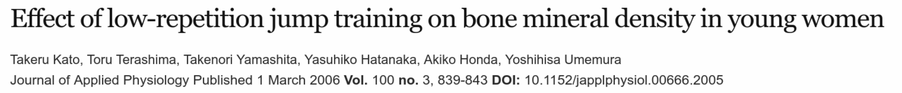
Title and authors, with journal and page numbers, so that you have everything you need to refer to it.
Abstract
Journal articles typically begin with Abstract that summarizes question and gives highlights of results and conclusion, and tells you whether paper is worth your while to read.
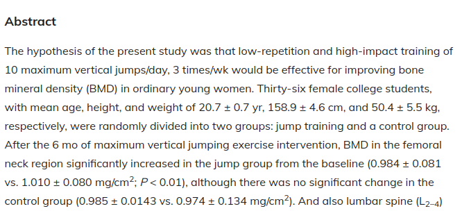
Introduction
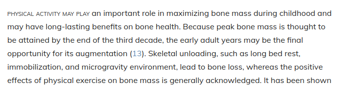
Introduction begins with plain-English first sentence. The numbers in brackets are references to what other people have said.
Materials and methods
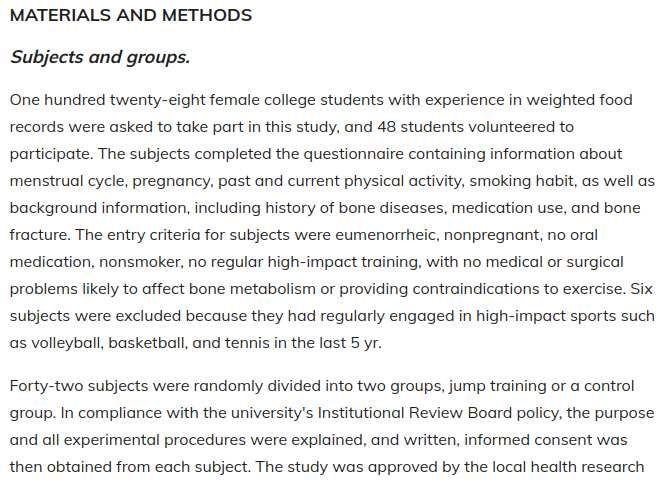
The subjects. Experiments on humans require “ethical approval”.
Taking measurements
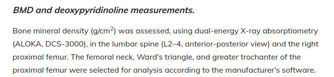
…and
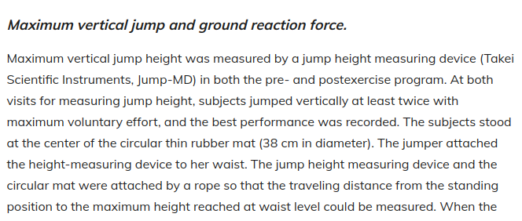
Results (a)
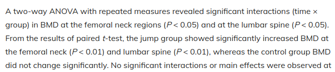
…noting that the two groups were not significantly different before the study, but changed in important respects over time. Results also shown in table.
Results (b)
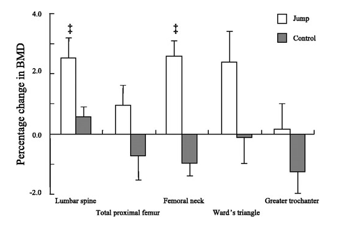
Graph showing that bone mass density has changed greatly as a result of the jumping. (Graphs are always good.)
Conclusions (selected) 1/2
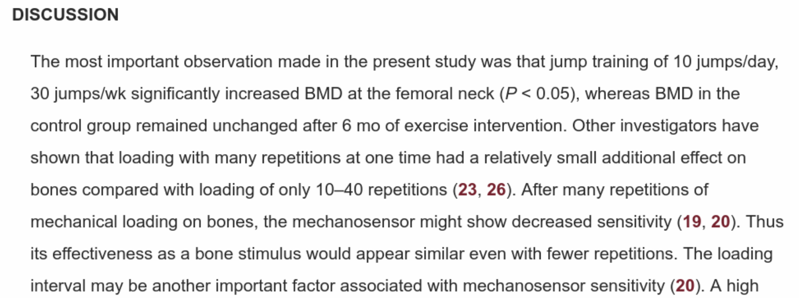
…
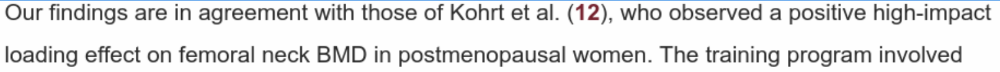
Conclusions 2/2
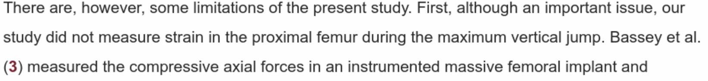
Note use of (relatively) plain English, description of most important findings, comparisons to other work, and admission of limitations.
References to other work (some)
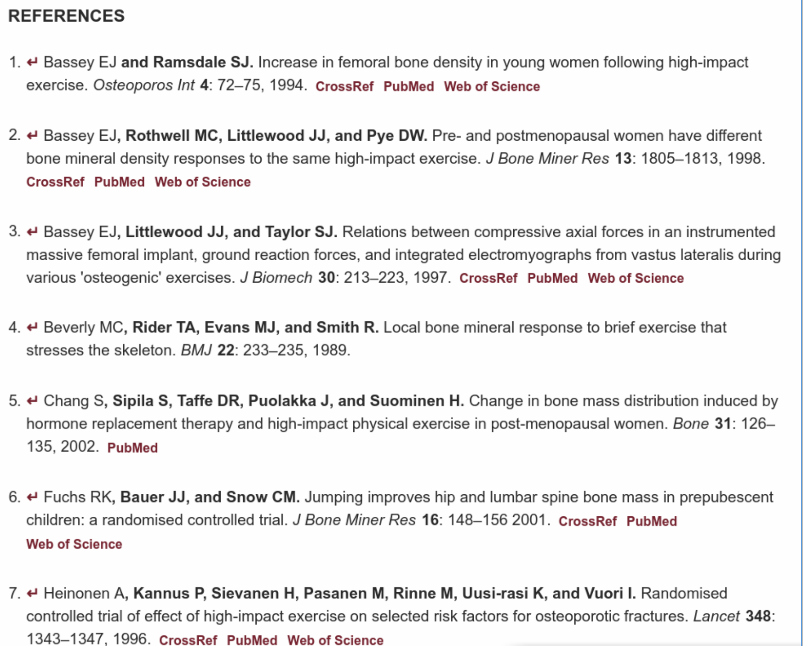
Reproducibility
- The paper we just looked at contained a lot of information.
- Partly, this was to show that the researchers followed proper procedure (important with human subjects).
- Also allows anyone to do analysis on same data and get same results (reproducible).
- Allows anyone to follow same procedure on own data and see if results same (replication).
- As statisticians, we need our own reports to be reproducible, and to be able to replicate them on different data.
- Strategy for this: write reports so that they include the code and a way of running it.
- This can be done in R (using a Quarto document).
Why this is better than copy-and-paste
- This seems like more trouble than copying-and-pasting the code and output into a Word document. Why should I do it?
- You are guaranteed to get code and output that matches up. If you copy-and-paste, how do you know you remembered to copy the most recent run of your code? (When you change your code, you have to remember to run it again, and to re-copy the output.)
- Anyone else, or you yourself later, can make the document again from the R Markdown file (and the data files), or run the same code on a new data file. This makes the analysis reproducible. Any procedure that depends on copy-pasting the right thing is not reproducible.
- Bosses have a habit of asking for small changes to a document. You make those small changes in the Quarto file, render again, and you have your results with minimal fuss.
Other output formats
- The basic (and fastest) form of output is HTML. This is best for while you’re writing the report, or if you want to put it on a web site.
- Word .doc output: when you think you’ve finished writing (slow). If you want to make changes, edit the Quarto document, close the Word doc, re-render, re-open.
- PDF, via a LaTeX installation such as
tinytex(R Studio on Jupyter has LaTeX already). - Presentations of various flavours (makes suitable HTML/PDF out of the Quarto).
Writing your own report
- A complete report of an analysis has (at least) three parts:
- Introduction, where you talk about the context of your data, where it came from, and what you are hoping to learn
- you might also have a Literature Review where you talk about work that other people have done
- Analysis, where you describe the steps you took to get the data into shape for your analysis, what analysis you did and why, and your assessment of the assumptions for your analysis.
- Conclusions, where you summarize what you learned about your data, and the implications for the world outside your data set.
- if you have a Literature Review, you probably also want to discuss how your results are consistent (or inconsistent) with the literature.
- Introduction, where you talk about the context of your data, where it came from, and what you are hoping to learn
- Only a small part of this is actually doing Statistics. More of it is explanation, using your language skills. Much of the rest is typically getting the data into shape to do your chosen analysis.